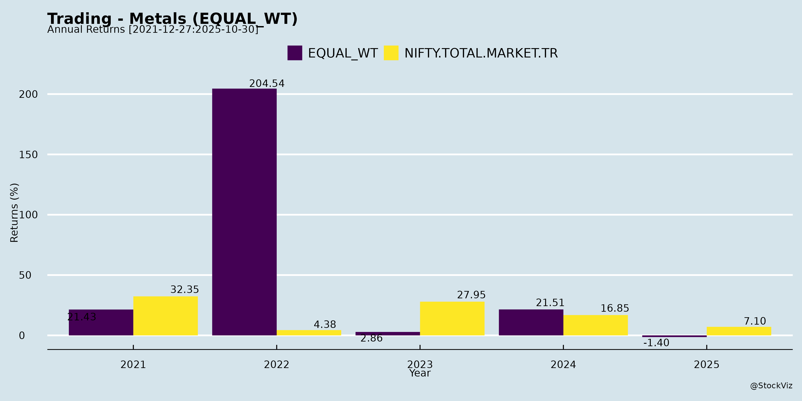
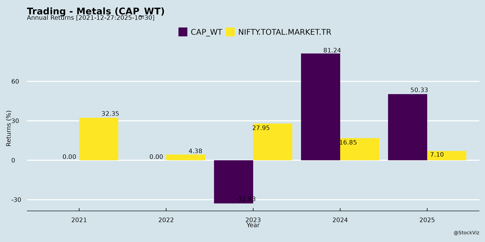
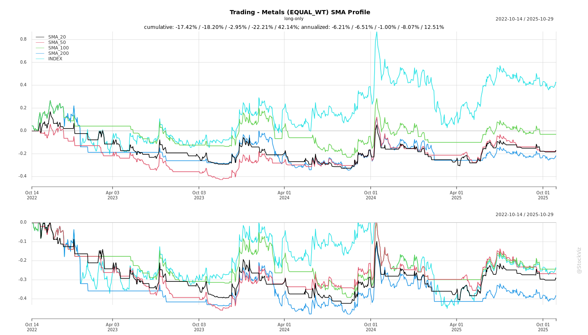

Trading - Metals
Industry Metrics
February 20, 2026
Annual Returns




Cumulative Returns and Drawdowns
SMA Scenarios

Current Distance from SMA
Rolling Returns


Market Cap
EBIT (% of Industry Total)
Revenue (% of Industry Total)
AI Summaries
Analyst
asof: 2025-11-29
Analysis of SG Mart Limited (Indian Trading - Metals Sector)
SG Mart Limited operates in the steel trading and processing segment with four verticals: B2B metal trading (30% of Q2 revenue), service centers (50%), renewable structures (4%), and distribution products (16-17%). Q2 FY26 revenue exceeded INR 1,700 Cr (+50% QoQ), but EBITDA margins disappointed at ~1.6% due to one-offs. H1 FY26 shows flat revenue YoY but +61% EBITDA YoY growth. The company targets ROCE of 20-25% with WC days at 22. Below is a structured analysis based on the Q2 FY26 earnings call transcript.
Headwinds
- Macroeconomic Pressures: Heavy monsoons and weak demand from construction, autos, and white goods led to stalled activity and heightened steel price volatility (Q2 decline of ~INR 3,000/ton).
- Inventory Losses: Sharp price drops caused minor but optically significant losses (50-60 bps of revenue impact), primarily in service center raw material inventory (27 days).
- One-Off Expenses: Front-loaded branding/advertising expenses (2.5-3x prior levels, >50 bps impact) and upfront opex for renewable structures/profiling (e.g., marketing, manufacturing setup).
- Guidance Misses: FY26 EBITDA target of INR 200 Cr now “difficult” (H1 at INR 64 Cr); Q3 expected similar to Q2, delaying normalization to Q4.
- Demand-Supply Imbalance: Adequate steel supply but soft demand; unorganized traders still dominate market share capture.
Tailwinds
- Strong QoQ Recovery: Revenue +50% QoQ across verticals; combined B2B + service center volumes at highest-ever quarterly levels.
- Steel Supply Normalization: Increasing domestic blast furnace capacity ensures raw material availability, critical for trading/processing scale-up.
- Business Mix Shift: Higher contribution from stable, high-margin verticals—service centers (INR 1,500-2,000/ton EBITDA) and renewables (INR 2,000-3,000/ton)—insulating from volatility.
- Low Working Capital Intensity: 22 days overall (15-25 days target); enables superior ROCE vs. peers.
- Organized Shift: Capturing share from unorganized traders via balance sheet strength (INR 1,000 Cr cash) and network.
Growth Prospects
- Service Centers: 7 operational (5 owned, 2 leased); +1 in Jaipur (Q4 FY26); target 4-6 additions/year for pan-India network (dozens in 3-4 years). Throughput exceeding expectations (up to 12,000 tons/month vs. 5,000 planned), driving 35% QoQ volume growth.
- Renewable Structures: INR 260 Cr order book (visibility for 2-3 quarters); Q3 contribution to double Q2; expanding to 10-15 products (e.g., cable trays, solar struts) using existing service center assets (no extra capex).
- B2B & Distribution: B2B +50% QoQ; distribution stabilizing with new products (TMT, mesh, light structures) and royalty model (INR 15 Mn royalty, no capex).
- Volume Outlook: FY26 > H1 levels (0.5 Mn tons in H1 from B2B/service centers; renewables ramp to 30,000+ tons order book). FY27: +15-20% in B2B/distribution; service centers at ~10,000 tons/month each.
- Capex & Long-Term: INR 200 Cr/year funded by EBITDA/cash; long-term EBITDA guidance intact post-Q4 normalization (2-2.5% margins, INR 500-3,000/ton by vertical).
- Strategic Positioning: Emulating global steel traders (Mitsui, Itochu); leveraging group distribution network for downstream products.
Key Risks
| Risk Category | Description | Potential Impact |
|---|---|---|
| Price Volatility | Sharp steel price drops (e.g., INR 3,000/ton in 30 days) amplify inventory hits despite low days; October 2025 dip noted. | EBITDA erosion (15-50% in affected quarter); full-year dilutive if prolonged. |
| Demand Recovery | Delayed restocking/confidence in construction/autos; global trade uncertainty limits exports, flooding domestic supply. | Volume stagnation; margin pressure if supply outpaces demand. |
| Execution | Scaling service centers/renewables (e.g., land delays led to 2 leases vs. owned); upfront costs delaying profitability. | Capex overruns; ROCE miss if throughput < targets. |
| Guidance Credibility | Repeated misses (e.g., Q3 normalization slipped from prior calls) erode investor trust. | Higher cost of capital; stock volatility. |
| Competition/External | Unorganized traders; import tariffs/global factors affecting supply chain. | Market share loss; WC creep in international trading. |
| Financial | Cash deployment (INR 1,000 Cr) into WC/capex reduces other income; interest costs rise without EBITDA offset. | Balance sheet strain if growth lags. |
Summary
SG Mart demonstrated resilience with +50% QoQ revenue growth amid macro headwinds (monsoons, price volatility), driven by service centers (50% mix) and steel supply adequacy. Tailwinds include high-margin vertical scaling and low WC, positioning it for pan-India dominance in steel trading/processing. Growth prospects are strong (Q4 normalization, 4-6 service centers/year, INR 260 Cr renewables book), targeting long-term 2-2.5% EBITDA margins and 20-25% ROCE. However, key risks—volatility, demand weakness, and execution—have led to FY26 guidance cuts, underscoring sector cyclicality. Overall, SG Mart suits patient investors betting on organized consolidation and infrastructure recovery, with Q4 FY26 as a critical inflection point. H1 FY26 EBITDA +61% YoY validates the model despite near-term disappointments.
Financial
asof: 2025-11-29
Analysis: Indian Metals Trading & Recycling Sector (Based on Lloyds Enterprises, Nupur Recyclers, Ashoka Metcast Q3/9M FY25 Filings)
These filings from listed players in metals trading, scrap recycling, and steel processing highlight sector dynamics amid volatile commodity cycles, infra demand, and compliance pressures. Nupur shows resilient profitability despite revenue dips; Ashoka exhibits consolidated growth via trading/subs; Lloyds faces regulatory scrutiny.
Headwinds
- Revenue Volatility & Declines: Nupur’s Q3 rev ops fell 33% QoQ (₹3,431L vs ₹5,118L) and 9M down 38% YoY (₹12,109L vs ₹19,638L), driven by scrap price corrections and inventory changes. Ashoka standalone rev modest (₹50L Q3). Signals softening demand or pricing pressure.
- Compliance & Reporting Issues: Lloyds clarification on unsigned results, format non-compliance (Schedule III), and auditor errors (e.g., incorrect associate review disclosure). Nupur/Ashoka note unreviewed subs (e.g., Nupur’s 4 subs on mgmt accounts, Ashoka’s associate not reviewed), raising audit quality concerns.
- High Costs & Leverage: Finance costs up (Nupur Q3 ₹64L; Ashoka cons. ₹40L). Inventory fluctuations (Nupur negative change aids profits but volatile).
- Macro Pressures: Implicit global metal price weakness (steel/ferrous scrap down ~10-15% CY24), import competition, and monsoon/infra delays.
Tailwinds
- Margin Expansion & Profit Resilience: Nupur 9M PAT up 103% YoY (₹1,396L vs ₹689L) via cost control (e.g., material costs down QoQ). Ashoka cons. PAT ₹679L (9M), EPS ₹2.72. Lloyds’ quick clarifications maintain listing compliance.
- Fund Infusion for Expansion: Nupur raised ₹1,843L (25% warrants), deployed in subs/WC/capex (no deviations). Supports scaling in recycling.
- Infra-Led Demand: Govt push (e.g., ₹11L cr budget) boosts steel/metal needs; Ashoka/Nupur in PAN-India trading/recycling align with “Make in India” scrap policy.
- Segment Diversification: Ashoka’s steel trading (₹3,067L 9M cons.) + goods trading growth; Nupur ferrous/non-ferrous scrap processing.
Growth Prospects
- High: Recycling mandates (e.g., 50% steel from scrap by 2040) favor Nupur-like players. Infra (₹1.5L cr highways), realty, EVs to drive 8-10% steel demand CAGR FY25-27.
- Company-Specific: Nupur’s subs (e.g., Frank Metals) contribute 30-40% rev; warrant conversion could add ₹5,500L equity. Ashoka’s sub Rhetan TMT scales cons. rev 20% YoY (₹3,247L 9M). Lloyds (steel-focused) could rebound post-compliance.
- Sector Upside: Domestic scrap shortage (imports ~8MT), export curbs on low-grade steel create opportunities. Projected sector rev growth 12-15% FY26 on capex cycle.
Key Risks
- Commodity Price Swings: 70-80% rev tied to metals; 10% LME drop erodes margins (Nupur inventory risk).
- Regulatory/Governance: Lloyds’ deficiencies signal weak controls; SEBI/NSE scrutiny on unreviewed subs (Nupur: ₹9,731L assets unaudited).
- Execution/Debt: High finance costs (Ashoka 9M ₹119L); Nupur’s mgmt-certified subs (₹10,731L assets, ₹949L PAT) vulnerable to errors.
- External: Forex (scrap imports), China dumping, power costs. No loan defaults noted, but leverage up (Ashoka total debt ₹0 reported).
| Aspect | Rating (Short-Term) | Key Driver from Filings | Outlook (FY26) |
|---|---|---|---|
| Headwinds | High | Rev declines, compliance lapses | Moderating |
| Tailwinds | Medium | Profit growth, fundraises | Strengthening |
| Growth | Medium-High | Infra/recycling tailwinds | 10-12% CAGR |
| Risks | High | Prices, audits | Elevated |
Overall Summary: Sector faces near-term headwinds from price weakness and compliance (Lloyds exemplar), but tailwinds from infra spending and recycling policy support Nupur/Ashoka’s profit beats. Growth prospects strong (double-digit via capex), but risks (volatility, governance) warrant caution—favor companies with clean audits/fund deployment. Monitor Q4 steel prices/global cues.
General
asof: 2025-11-29
Summary Analysis: Indian Trading - Metals Sector (Focus on Lloyds Enterprises Ltd & Peers)
Using the provided documents, the analysis centers on Lloyds Enterprises Ltd (LEL) as the primary source of metals-related insights (steel/allied trading, iron ore pellets, engineering for steel/power sectors, and indirect exposure via Lloyds Metals & Energy Ltd - LMEL). Other filings (BMW Ventures, Nupur Recyclers, Ashoka Metcast) offer limited sector-specific data—mostly procedural (e.g., financial ads, auditor appointments, AGM notices)—but highlight operational continuity in small-cap metals/recycling/trading firms amid regulatory compliance. LEL’s H1FY26 results show robust momentum in a cyclical sector buoyed by infra demand.
Tailwinds (Positive Drivers)
- Strong Demand & Volume Growth: Standalone trading income up 36% YoY; consolidated up 44% YoY (H1FY26). Iron ore pellets cater to domestic/export steel markets amid India’s steel capacity expansion (e.g., infra push via govt schemes).
- Subsidiary Synergies: LEWL (33% held by LEL) delivers stellar FY25/H1FY26 with ₹1,500 Cr order book (EPC in steel/power/defence); debt-free with 2x capacity ramp-up. LMEL exposure provides low-cost iron ore/pellet flywheel (26Mnt mining EC, 4Mt pellet plant).
- Diversification Boost: Gold mining entry via 31.58% stake in Geomysore (₹140 Cr invest); Jonnagiri mine (1,000 kg/year peak, 42.5T resource) nears Q2FY26 commissioning—import substitution amid rising gold prices.
- Realty-Infra Link: LRDL MoUs for 270+ acres (warehousing/residential in MMR); ₹5,000 Cr revenue potential ties into metals demand (construction).
- Macro Support: Steel/infra cycle recovery; export pellet demand; low logistics costs (LMEL pipeline).
Headwinds (Challenges)
- Commodity Volatility: Steel/iron ore prices susceptible to global slowdowns (e.g., China demand dip), import pressures, and freight costs—trading stable but PAT surge (1634% YoY standalone) partly from one-off portfolio monetization.
- Execution Delays: Gold mine pre-commercial phase risks commissioning slips; LEWL’s EPC pivot (acquisitions/tech tie-ups) needs flawless delivery.
- Scale Constraints in Peers: Small-caps like BMW Ventures/Ashoka Metcast show compliance focus but no growth metrics; recycling (Nupur) faces e-waste/metal scrap supply issues.
- High Base Effect: LEL’s explosive PAT growth may moderate; trading remained “stable” YoY despite volumes.
Growth Prospects
- Near-Term (1-2 Yrs): Gold production ramp (1,000 kg/year for 15 yrs); LEWL order execution (₹11,500 Cr group order book); LRDL land aggregation (99+32 acres Taloja warehousing in 9 months, 175 acres Khopoli).
- Medium-Term (3-5 Yrs): Trading expansion into steel raw materials; LMEL catalysts (pellet ramp, MDO integration); LRDL pipeline (2.9 Mn sq ft delivered, new JVs for Bandra/Goregaon/Khopoli).
- Long-Term Value: Debt-free subsidiaries; asset-light realty model; gold resource upside (JORC 42.5T). Consolidated PAT up 441% YoY signals 20-30% CAGR potential if steel demand sustains (India’s 200+ Mt steel capacity target).
- Market Positioning: LEL Market Cap ₹90 Cr (Sep ’25); undervalued vs. peers (52W H/L 88/34); promoter holding 62.7%.
Key Risks
- Cyclical/Commodity Exposure: Metals price crashes or China oversupply could erode margins (LMEL mitigates via low-cost integration, but not immune).
- Project Execution: Mining EC valid to 2043 but delays in gold commissioning/logistics; realty MoUs non-binding.
- Regulatory/Environmental: Mining approvals, land aggregation timelines; SEBI compliance (e.g., disclosures in filings).
- Liquidity & Capital: Warrants/expansions need funding; small-cap volatility (LEL avg volume 3Mn shares).
- Diversification Dilution: Realty/gold shift from pure metals trading may pressure focus if infra slows.
- Peer-Specific: BMW/Nupur/Ashoka filings indicate governance risks (e.g., auditor changes, physical shareholder outreach).
Overall Outlook: Bullish tailwinds from infra/gold diversification outweigh headwinds; growth pegged at 30-50%+ for LEL via subsidiaries. Monitor Q3FY26 for gold ramp/steel prices. Sector resilient but cyclical—recommend position sizing for volatility. (Disclaimer: Not investment advice; based solely on docs.)
Investor
asof: 2025-11-29
Summary Analysis: SG Mart Limited (Indian Trading - Metals Sector)
SG Mart Limited exemplifies key dynamics in India’s metals trading sector, focusing on steel B2B trading, service centers (processing), renewable structures (semi-processing), and distribution. Q2 FY26 showed resilient QoQ revenue growth (50% to ~INR 1,700 Cr) amid macro headwinds, but EBITDA margins disappointed (1.6% vs. 2-2.5% target) due to one-offs. H1 FY26 EBITDA up 61% YoY, but FY26 guidance (INR 200 Cr) revised lower. The company leverages a strong balance sheet (~INR 1,000 Cr cash) for capex (~INR 200 Cr/year) while targeting 20-25% ROCE. Below is a structured analysis of headwinds, tailwinds, growth prospects, and key risks.
Headwinds
- Steel Price Volatility: Sharp Q2 decline (~INR 3,000/ton, or 5-6%) led to inventory losses (50-60 bps EBITDA impact); ongoing October dip signals persistent pressure. Trading margins eroded (B2B: INR 500-1,000/ton).
- Macro Demand Weakness: Heavy monsoons stalled construction (key steel consumer); weak autos/white goods demand due to low consumer sentiment. Global trade uncertainty caps exports/pricing power.
- One-Off Costs: Pre-booking of branding/marketing expenses (2.5-3x prior levels, ~50 bps impact) and upfront opex for renewables/profiling depressed EBITDA. Q3 likely similar.
- Inventory & WC Pressure: 22-day WC cycle (up QoQ due to renewables/international trading); service centers hold bulk inventory, amplifying volatility hits.
Tailwinds
- Steel Supply Ramp-Up: Domestic blast furnaces operationalizing, ensuring availability; enabled highest-ever Q2 volumes (B2B + service centers).
- Business Mix Shift: High-margin verticals (service centers: 50% revenue, INR 1,500-2,000/ton EBITDA; renewables: INR 2,000-3,000/ton) insulating from volatility; processing > pure trading.
- Efficiency & Balance Sheet: Low WC (15-25 days target), 35% QoQ service center volume growth, high throughput (up to 12,000 tons/month/service center vs. 5,000 expected).
- Organized Shift: Capturing share from unorganized traders via network/brand; TMT royalty model (zero capex, INR 15 Cr Q2 revenue) adds stable income.
Growth Prospects
| Vertical | Q2 Contribution | Key Drivers & Outlook |
|---|---|---|
| Service Centers | 50% | 7 operational; +4-6 YoY (Jaipur Q4 FY26); pan-India network (like Mitsui/Itochu); 10,000 tons/month/service center target. |
| B2B Metal Trading | 30% | 50% QoQ growth; infinite potential with supply; H1 flat YoY, but 15-20% FY27 growth. |
| Renewables Structures | 4% | INR 260 Cr order book (30,000+ tons visibility for 2-3Q); doubling Q3 contribution; +10-15 products (e.g., cable trays) via existing centers (no extra capex). |
| Distribution | 16-17% | Product additions (TMT/mesh); stabilizing post-QoQ jump; royalty from franchises. |
- Overall: FY26 volumes > H1 (0.5 Mn tons B2B/service centers); FY27 acceleration via 10+ centers, renewables execution. Long-term: Dozens of centers, EBITDA growth to match capex (INR 200 Cr/year); Q4 FY26 as “true” run-rate milestone.
Key Risks
- Execution/Guidance Misses: Repeated revisions (e.g., FY26 EBITDA <INR 200 Cr); Q3 flat, Q4 dependency erodes trust; scaling renewables/service centers unproven.
- Volatility Exposure: Despite low inventory, sharp/short-term drops (e.g., INR 3,000/ton in 30 days) hit harder than gradual ones; demand recovery (construction/autos) uncertain.
- Capex/WC Sustainability: INR 200 Cr annual spend from cash/EBITDA; higher WC in high-margin units could dilute ROCE if volumes lag.
- Macro/Competition: Prolonged weak demand or export shifts (despite import tariffs); competition from organized players; regional concentration (NCR-heavy).
- Quantified Sensitivities: EBITDA per ton stable long-term, but 50+ bps one-offs common; full-year inventory hits dilute to <15% profit impact.
Overall Outlook: SG Mart’s pivot to value-added (processing/distribution) positions it well for sector consolidation amid rising supply, but near-term volatility caps FY26 upside. Long-term prospects strong (high ROCE, network scale), contingent on Q4 execution and demand rebound. Investors should monitor Q3 results and service center throughput for validation. Comparable peers (e.g., APL Apollo) show inventory efficiency improves with scale. Recommendation: Hold/Buy on dips for 2-3Y horizon; target 2-3x EBITDA growth by FY28 if guidance stabilizes.
Meeting
asof: 2025-12-02
Analysis of Indian Metals Trading Sector (Focus: Non-Ferrous/Ferrous Scrap, Recycling, Steel Trading)
Based on the provided documents from key players—Lloyds Enterprises Ltd (steel/engineering trading), Nupur Recyclers Ltd (non-ferrous recycling/trading), Ashoka Metcast Ltd (steel trading), and SG Mart Ltd (trading with metals exposure)—the Indian metals trading sector shows resilience amid headwinds. Revenue declines (20-50% YoY in Q2/H1 FY26 for most) reflect global slowdowns, but infra tailwinds and domestic demand support recovery. Below is a structured summary:
Headwinds (Challenges Pressuring Performance)
- Demand Slump & Revenue Pressure: Sharp drops in trading volumes—Lloyds standalone revenue Q2 FY26: ₹91 Cr (vs ₹170 Cr YoY); Nupur consolidated FY25: ₹16,769 Cr (down 32%); Ashoka consolidated Q2: ₹521 Cr (low base but volatile). Global factors (China real estate crisis) hit exports/imports.
- Commodity Volatility: Inventory fluctuations hurt margins (Lloyds: +₹1.59 Cr inventory change Q2; Nupur: -₹619 Cr FY25). High forex exposure (Nupur imports 100% raw materials).
- One-Off Dependencies: Profits boosted by non-core income (Lloyds Q1 “other income” ₹261 Cr, likely divestments; Ashoka Q2 ₹253 Cr).
- High Debt/Receivables: Nupur debt-equity 0.11; Lloyds trade receivables ₹3,496 Cr (standalone). Slow collections risk liquidity.
- Macro Pressures: Elevated finance costs (Lloyds ₹11.67 Cr H1; Ashoka ₹76 Cr H1), rising input costs, and monsoon/geopolitical risks (Nupur MD&A).
Tailwinds (Positive Catalysts)
- Domestic Infra Boom: India’s ₹111 Lakh Cr NIP, housing schemes, renewables/EVs drive steel/aluminium/zinc demand (Nupur: 6-10% steel growth FY26; Lloyds segments: Engineering ₹309 Cr Q2).
- Policy Support: Aatmanirbhar Bharat, PLI schemes, recycling mandates boost local processing (Nupur: “leading in non-ferrous recycling”).
- Fundraising & Expansion: Rights issues (Lloyds ₹496 Cr H1 proceeds), acquisitions (Lloyds: Metalfab/Techno; Nupur: 4 subsidiaries), warrants (Ashoka ₹1,927 Cr).
- Cost Discipline: EBITDA margins stable (Lloyds 288 Cr H1 PAT; Nupur ROCE 12%); debt reduction (Nupur repaid loans).
- Diversification: Multi-segments (Lloyds: Real Estate/Steel/Engineering; Nupur: Trading/Recycling) hedge pure trading risks.
Growth Prospects
- Short-Term (FY26): 6-8% sector growth (infra-led); Nupur projects 6.3-6.5% GDP aiding metals. Lloyds H1 PAT ₹251 Cr (standalone, up YoY); Ashoka Q2 PAT ₹296 Cr.
- Medium-Term (2-3 Yrs): 8-10% CAGR via EVs (aluminium/zinc), renewables (steel), exports (if China recovers). Recycling tailwinds (sustainability mandates); Nupur/Lloyds expansions (capacity ₹1,000+ Cr investments).
- Long-Term: India as global metals hub (2nd largest steel producer); urbanisation/infra to sustain 7-9% demand growth. Fundraising (₹2,000+ Cr across firms) funds capex.
- Catalysts: RBI rate cuts (credit growth), monsoon normalcy, China stimulus.
Key Risks
| Risk Category | Description | Mitigation (from Docs) |
|---|---|---|
| Commodity/Price | Volatility in steel/zinc/aluminium (Lloyds OCI swings ₹1,198 Cr loss Q2). | Hedging limited; inventory mgmt (Nupur turnover improved). |
| Demand/Geopolitical | China slowdown, wars disrupt imports (Nupur 100% imports). | Domestic focus (infra 60% demand). |
| Forex/Liquidity | Import-heavy; high receivables (Lloyds ₹3.5k Cr). | Forex gains/losses managed; fundraising. |
| Regulatory | Env norms, duties (Nupur contingent liabilities ₹348 Cr tax). | Compliance (CSR, audits clean). |
| Execution | Subsidiary integration (Lloyds 4 subs; Nupur losses in some). | Acquisitions accretive (Lloyds PAT up). |
| Credit/Debt | Rising finance costs; NPAs (Ashoka debt ₹1,256 Cr). | Strong net worth (Nupur ₹10,952 Cr). |
Overall Outlook: Positive with Caution. Sector resilient (PAT growth despite revenue dip via cost cuts/others); FY26 recovery likely on infra (target 10-15% EBITDA growth). Monitor China/global metals prices. Investors: Favor diversified players like Lloyds/Nupur (strong balance sheets, expansions). Risks tilted to macros, but tailwinds dominate long-term.
Press Release
asof: 2025-11-29
Indian Metals Trading Sector Analysis (Based on BMW Ventures & Nupur Recyclers Q2 FY26 Results)
Context: BMW Ventures (steel distribution, fabrication, PEBs/girders in Bihar) and Nupur Recyclers (ferrous/non-ferrous scrap trading/processing) exemplify resilience in India’s metals trading amid infra-led demand. BMW reported 6.2% YoY revenue growth (₹502 Cr) and 12.5% PAT rise (₹7.1 Cr), despite EBITDA margin dip; Nupur saw 7.1% QoQ PAT growth (₹43.3 Lacs) on marginal revenue dip, fueled by expansions.
Headwinds
- Price Volatility & Soft Demand: BMW noted “soft pricing environment” compressing EBITDA margins (398 bps YoY dip to 3.98%). Nupur’s QoQ revenue decline reflects cyclical scrap/steel pricing pressures.
- Input Cost Fluctuations: Steel/scrap import dependency exposes to global commodity swings and forex risks.
- Margin Pressure: Trading margins squeezed by competition; BMW’s EBITDA flat YoY despite revenue growth.
Tailwinds
- Infra & Govt Push: BMW benefits from Bihar/east India infra boom (railways, PEBs); RDSO-approved girders align with railway capex. Nupur leverages “Make in India”/“Atmanirbhar Bharat” for recycling.
- Dealer Networks & Regional Strength: BMW’s 1,299 dealers across 29 Bihar districts; Nupur’s sourcing/processing edge.
- Diversification Momentum: BMW’s value-added products (order book surge); Nupur’s expansions (Haryana land/unit, Tycod Autotech acquisition, solar/OEM supply).
Growth Prospects
- Strong Outlook: BMW targets 25-30% YoY PAT growth in H2 FY26 via PEBs/girders (27,800 MT capacity). Nupur eyes recycling value-chain integration, auto/solar via subsidiaries—yielding “sustainable returns.”
- Sector Drivers: Rising steel consumption (infra/Railways), circular economy (scrap recycling), employment/job creation. Combined: 10-15%+ topline/PAT CAGR potential FY26+.
- Expansion Plays: New facilities/acquisitions to reduce supplier reliance, tap OEMs (Tata, Sundaram) and high-growth segments.
Key Risks
- Macro/Regulatory: Domestic/global economic slowdowns, policy shifts (taxes, import duties)—noted in disclaimers.
- Execution/Integration: Acquisition risks (Tycod), capex delays (Nupur’s Haryana units); BMW’s deleveraging.
- Commodity/Operational: Price crashes, supply chain disruptions; competition in Bihar/east.
- Forward-Looking Uncertainty: Actuals may vary from guidance due to steel cycles.
Summary: India’s metals trading shows resilience (double-digit PAT growth) despite pricing headwinds, buoyed by infra tailwinds and diversification (value-add/recycling). Growth prospects robust at 20-30% FY26 bottom-line via expansions, but volatility/execution risks warrant caution. Positive for infra-aligned players like BMW/Nupur.
Copyright © 2023 SAS Data Analytics Pvt. Ltd. All rights reserved.